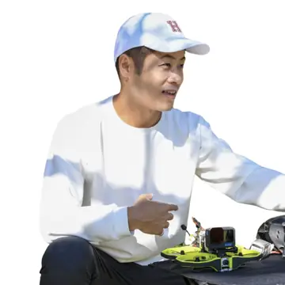

今でも、十分がんばっています。
だから、その努力をもっと報われる形に。
日々の営業をしながら写真を撮り、投稿し、お知らせする。その積み重ねを否定せず、伝わる順番とつながりを整えます。
日々の営業をしながら写真を撮り、投稿し、お知らせする。その積み重ねを否定せず、伝わる順番とつながりを整えます。
お店の価値ではなく、見つけられ方で差がつく時代です。SNS・Google・地域発信をつなぎ、選ばれる入口を整えます。
SNS・Google・写真・更新情報をつなぐと、AIが事業の特徴を理解しやすくなります。
検索・地図・口コミ・写真が整っているほど、比較のスタート地点に立ちやすくなります。
発信・検索・口コミがつながると、小金井の中で見つかり、選ばれる理由が積み上がります。
だから必要なのは、投稿数を増やすことではなく、小金井で見つかる仕組みを持つことです。
社長は、価値を育てる。 まちこがは、その価値を伝わる形にします。
一つずつ別々に頑張るのではなく、つなげて使うことで、今の発信を小金井で強い資産に変えていきます。
Instagram・Google・まちアカ・ぶる・動画を、バラバラの施策で終わらせない。自分たちで発信し、見つけてもらい、地域で選ばれ続ける土台としてつなぎます。
同じ1回の発信でも、行き先をつなぐことで接点が増え、地域内での認知と信頼が積み上がります。
まずは今ある発信を整え、必要に応じてInstagram強化・講座・セミナーまで広げます。
今ある発信を、事業で使える武器へ。外注して終わりではなく、Instagram・Google・地域導線を無理なく続く形に整えます。
見せ方・世界観・導線を整え、Instagramを集客の主戦場として磨きます。
自分で発信して、自分で仕事につなげる力を身につける講座です。
地域ビジネスのSNS・AI・Google活用を、現場目線でわかりやすく伝えます。

株式会社C&C代表。地域メディア「まちアカ」主宰。
まちアカを見る →小金井在住11年目。店舗・SNS・Google・地域導線を、事業者の資産として残る形に設計。

株式会社ドローンエンタテインメント代表。FPV・マイクロドローン映像の第一人者。
動画事例を見る →投稿を外注するのではなく、小金井で商売が続く発信力を、自分たちの中に残す。
小金井で来てくれるコアファン、さらに紹介・応援までしてくれるエバンジェリストを増やすアカウントへ。
SNSとGoogleを同時に整え、地図・検索・口コミ・AIからも見つけてもらえる土台を育てます。
集客だけではありません。新規来店・採用・認知・Google・アカウント立ち上げまで。まちこがが一緒に取り組んだ成果の一部です。
採用決定
保存10
1日1組「Instagramを見た」で新規来店
閲覧数トップへ
※成果事例は一部抜粋です。数値・実績は2026年8月時点を含みます。
景観と空気感を印象的に。
料理とお店の個性をテンポよく。
安心感とやわらかさを表現。
空間の居心地を映像で。

何を発信すればいいか分からない人が、自分で仕事につなげられる発信力を身につける講座。

地域の方々が、自分の言葉で伝えられるようになるための学びの場をつくっています。
ぶるがやりたいのは、小金井で頑張る事業者が、ちゃんと見つかり、選ばれ、続いていくこと。一店一店が強くなり、それが小金井全体の強さに変わる流れを一緒につくることです。
いきなり全部変える必要はありません。今のままで良いところ、少し直すところ、これから育てるところを一緒に整理します。
相談だけでも大丈夫です。今の発信を見ながら、優先順位を一緒に整理します。